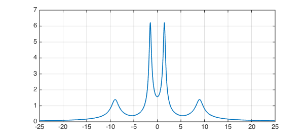
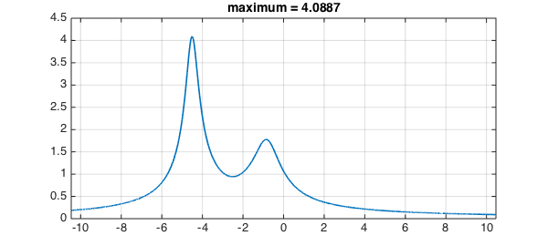
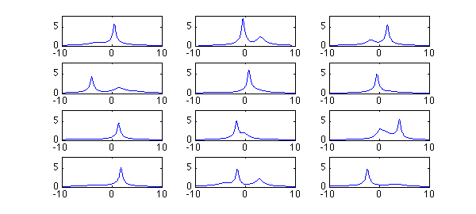

If $A$ is a square matrix, the resolvent of $A$ for a particular complex number $z$ is the matrix $(zI-A)^{-1}$. The $2$-norm of the resolvent is a quantity of interest in many applications. For example, if $\|(zI-A)^{-1}\| = 1/\varepsilon$ for some quantity $\varepsilon$, then there is a matrix $E$ with norm $\|E\| = \varepsilon$ such that $z$ is an eigenvalue of $A+E$. This is the starting point of the theory of pseudospectra [1].
In particular, suppose all the eigenvalues of $A$ are in the left half of the complex plane, so that $A$ is stable in the sense that all solutions of the differential equation $\frac{du}{dt} = Au$ decay to zero as $t \to \infty$. How small a perturbation matrix $E$ might make $A$ unstable? The answer is $\|E\| = \varepsilon$, where $1/\varepsilon$ is the maximum of $\|(zI-A)^{-1}\|$ as $z$ ranges over the imaginary axis. Therefore in a number of fields such as control theory, there is special interest in the values taken by the norm of the resolvent on the imaginary axis.
Let's compute this function with Chebfun. As an example we take the matrix
A = [-1 3 5 2; -3 -2 4 6; -5 -4 -2 1; -2 -6 -1 3]
A =
-1 3 5 2
-3 -2 4 6
-5 -4 -2 1
-2 -6 -1 3
A has two pairs of eigenvalues near the imaginary axis:
format short, format compact eig(A)
ans = -0.7688 + 8.9660i -0.7688 - 8.9660i -0.2312 + 1.5019i -0.2312 - 1.5019i
Suppose $z=x+iy$. It takes Chebfun a fraction of a second to compute a chebfun representing $\|(zI-A)^{-1}\|$ as a function of $y$, with $x=0$. Here is that calculation and a plot of the result:
I = eye(size(A)); nr = @(y) 1/min(svd(1i*y*I-A)); f = chebfun(nr,[-25,25],'vectorize'); LW = 'linewidth'; plot(f,LW,1.6), grid on

The maximum of $f$ is this,
format long maxf = max(f)
maxf = 6.227545522966329
and the distance to instability is the reciprocal of this quantity,
dist_sing = 1/maxf
dist_sing = 0.160576907276252
Let us consider another example matrix, and this time, let's make an anonymous function to construct the chebfun.
normfun = @(A) chebfun(@(y) 1/min(svd(1i*y*eye(size(A))-A)),... 1.5*norm(A)*[-1,1],'vectorize');
Here is a $5\times5$ matrix which we take to be complex, to break the symmetry:
B = [ -3-2i 1+1i -1i 0 -1+1i
0 -2-3i -1i 1i -2-1i
1i 0 -2-4i -2-1i 2-1i
0 1 1i -2-4i 1i
1-2i 0 1 1 -2-3i ];
format short, eig(B)
ans = -5.3054 - 3.2003i -0.6662 - 0.8209i -0.3296 - 4.5158i -2.9797 - 3.2972i -1.7191 - 4.1659i
And here is its resolvent norm plot:
fB = normfun(B); plot(fB,LW,1.6), grid on title(['maximum = ' num2str(max(fB))]);

Here are 12 random $6\times6$ complex matrices, all with rightmost eigenvalue having real part $-0.25$:
randn('seed',1)
for j = 1:12
N = 6;
A = randn(N) + 1i*randn(N) + 2i*diag(randn(N,1));
abscissa = max(real(eig(A)));
A = A - (abscissa+0.25)*eye(N);
subplot(4,3,j)
plot(normfun(A),LW,1)
axis([-10 10 0 8]), drawnow
end
Warning: Using 'seed' to set RANDN's internal state causes RAND, RANDI, and RANDN to use legacy random number generators. This syntax will be removed in a future release. See <a href="matlab:helpview([docroot '\techdoc\math\math.map'],'update_random_number_generator')">Updating Your Random Number Generator Syntax</a> to use RNG to replace the old syntax.

References:
[1] L. N. Trefethen and M. Embree, Spectra and Pseudospectra: The Behavior of Nonnormal Matrices and Operators, Princeton U. Press, 2005.